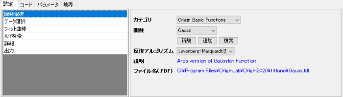
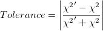
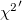
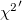
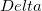
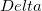
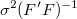

設定タブ (上側パネル)
NLFitダイアログ設定タブ
- 
関数選択
ドロップダウンリストから、使用するフィット関数を選択します。
| カテゴリ
|
関数のカテゴリを選択します。デフォルトのカテゴリはOrigin Basic Functionです。
|
| 関数
|
上記のカテゴリに含まれるフィット関数を選択します。各フィット関数の詳細は、曲線フィット関数リファレンスを参照して下さい。また、非線形曲面フィットの関数については、非線形曲面フィットをご覧ください。
また、<新規>, <検索>, <追加> が関数リストにあります。
- <新規>: フィット関数ビルダを開き、新しいフィット関数を作成します。
- <追加>: 外部*.fdf ファイルをフィット関数として追加します。
- <検索>: フィット関数を検索するための、関数の検索と挿入ダイアログを開きます。検索された関数はフィット関数名をダブルクリックするとフィットダイアログに追加できます。
| Note: 関数リストの下に新規、追加、検索ボタンを使うと、関数をすばやく追加または検索することができます。これらのボタンは、関数リストの下部に表示される<新規>、<追加>、<検索>と同じものです。
|
 | 検索ボタンをクリックすると、検索ダイアログの右上角にFitting Function Library アプリのアイコンがあります。このアイコンをクリックすると、ダウンロード可能な関数のリストが表示されます。また、キーワードで関数を検索しても見つからない場合は、Fitting Function Libraryアプリを開いて、アドオンの関数を参照することができます。このアプリはOriginの最新バージョンにプレインストールされています。
|
|
| 反復アルゴリズム
|
反復アルゴリズムを指定します。
この2つのアルゴリズムの違いに関してはODRアルゴリズムとL-Mアルゴリズムの比較を参照してください。
|
| 説明
|
関数の簡単な説明です。 この情報は読み取り専用です。
|
| ファイル名 (.FDF)
|
この関数に対応するFDFファイルです。この情報は読み取り専用です。
|
データ選択
入力データセットとデータモードを指定します。
複数データフィットモード
(複数の範囲が選択されている場合のみ利用できます。)
|
このオプションは入力データセットが複数ある場合のみ利用できます。
- 独立フィット-統合レポート
- 入力データセットは別々にフィットされます。 レポートは1つのシートに集約されます。より詳細な情報については、複数曲線の独立フィットをご覧ください。
- 独立フィット - 統合レポート
- 入力データセットは別々にフィットされます。 レポートは異なるワークシートに出力されます。より詳細な情報については、複数曲線の独立フィットをご覧ください。
| Note: 複数データセットに対してドロップダウンメニューから独立フィットを選択したら、独立フィットドロップダウンリスト が中央のボタン領域で利用できます。 この領域は 1回反復 または 収束までフィットを実行するデータセットを指定するのに使用されます。
|
- 連結フィット
- すべての入力データセットは、連結され、1つの曲線としてフィットされます。複製データは、フィッティング前に連結されますが、独立データポイントとして取り扱われますので、ご注意ください。より詳細な情報については、複製データでフィットをご覧ください。
- グローバルフィット
- データセットをグローバルにフィットします。 このモードは、1つのモデルを共有パラメータを持つ複数のデータセットにフィットさせる場合に使用します。パラメータ共有でのグローバルフィットをご覧ください。
|
| 重み付け
|
重み付け法を選択します。各範囲の設定を使用が選択されていると、各範囲をフィットするときに、各「入力データ」ブランチのyブランチに重み付け法が使われます。それ以外の場合、重み付け法はすべての入力範囲に適用されます。
|
| 入力データ
|
入力データセットを指定します。Origin 2020bから、グラフウィンドウから起動下場合にこのボックスの隣にある矢印ボタンをクリックして、Xスケール範囲を使用を選択し、ソースグラフのXスケール範囲を適用できます。
- 範囲
- XYデータ範囲
- ワークシート
- ワークブックにあるデータセットのワークシート名を指定します。
- X
- 曲線のX列
- Y
- 曲線のY列
- 重み付け
- 重み付け法
- 誤差と重み付けを使ってフィットするをご覧下さい。
- 行
- フィットするX列の範囲を指定します。行が行によるまたは Xによるにセットされているとき、開始と終了 のテキストボックスを使って、フィットする範囲を指定します。
- フィットするデータセットのすべての行を指定します。
- 行インデックスでX列の範囲を指定します。最終 に 0 と入力すると、入力データ範囲の「最後の行」を指定します。
- X値でX列の範囲を指定します。Xによるの設定では、実際のXの数値の代わりに名前付き範囲を使用できます。詳細は、こちらのOriginLabのブログを参照してください。
|
フィット曲線
| プレビューをソースグラフに表示する
|
このオプションは入力データセットがグラフの場合のみ利用できます。選択されていると、フィット曲線が元のグラフにプレビュー表示されます。
|
| フィット曲線のプロット
|
これが選択されていると、フィット曲線が出力され、このパネルの他のオプションが利用できるようになります。
- レポート表中にプロットする
- 選択されていると、フィット曲線がレポートテーブルに追加されます。
- グラフタイプ
- このオプションは入力データセットがグラフで、連結フィットモードが選択されている場合に利用できます。元のグラフに何を追加するかを制御することができます。
- 素データ
- 統合された入力データセットが作図されます。
- 平均、SD
- 入力データセットの平均値が散布図としてプロットされ、これに標準偏差がエラーバーとして付きます。
- 平均、SE
- 入力データセットの平均値が散布図としてプロットされ、これに標準誤差がエラーバーとして付きます。
- Note: 平均値, SD または 平均値, SE のどちらかが選択されている場合、入力データセットからすべてのY値を平均することでX値に対応する平均値が計算されます。X値に対応するY値が1つしかない場合、SDとSEは欠損値となります。
- ソースグラフ上にプロットする
- このオプションは入力データセットがグラフの場合のみ利用できます。元のグラフにフィットした曲線を追加するかどうかを指定します。
- なし
- フィット曲線は元のグラフに追加されません。
- フィット曲線
- フィット曲線が元のグラフに追加されます。
- フィット曲線+グラフタイプ
- フィット曲線とプロットタイプドロップダウンリストで指定したプロットが元のグラフに追加されます。このオプションは入力データセットがグラフで、 連結フィットモードが選択されている場合に利用できます。
- 残差 vs. 独立のプロット積上げ
- フィット曲線に残差 vs. 独立のプロットを積上げます。
- 曲面プロットタイプ
- このオプションは曲面フィット が使われていて、フィット曲面プロットが有効になっている(レポートテーブル、元のグラフ、あるいは両方)場合のみ表示されます。これはフィット曲面プロットにプロットタイプを指定するものです。プロットに曲面フィット結果を追加するには、OpenGLが有効になっているか、曲面グラフがXYZワークシートデータから作成されている必要があります。詳細はこの表をご確認ください。
- OpenGLがオンの場合、サポートされているグラフタイプは以下の通りです。
- OpenGLがオフの場合、サポートされているグラフタイプは以下の通りです。
- 3Dカラーマップ曲面
- 3D色付き曲面図
- 3Dワイヤーフレーム
- 3Dワイヤー曲面
- 等高線図
- ソースグラフの凡例を更新
- このオプションは入力データセットがグラフの場合のみ利用できます。選択されるとフィット曲線を追加した後、入力グラフの凡例を更新するかどうか指定します。
- ソースグラフの色を複数プロットに使う
- このオプションは入力データセットが複数でグラフの場合のみ利用できます。これが選択されていると、フィット曲線のの色が対応する元のプロットと同じになります。
- Xデータ型
- フィット曲線のX値を生成する方法を指定します。
- 入力データと同じ
- フィット曲線のX値は入力X値と同じになります。反復アルゴリズム が 直行距離回帰に設定されている場合は、これが初期設定となります。
- 均一X
- フィット曲線のX値が等間隔な線形スケールにプロットされます。
- 対数間隔
- フィット曲線のX値が対数スケールにプロットされます。
- 既存のデータセットを使用
- これは、既存のデータセットを選択してフィット曲線のX値の範囲を指定します。このオプションは曲面フィットでは利用できません。
- 曲線の形状に従う
- フィットカーブの X 値は元データの曲線形状に沿うように計算されます。これは、いくつかの範囲で元データの曲線が急激に変化する場合などにとても有効です。反復アルゴリズム が Levenberg Marquardt法に設定されている場合は、これが初期設定となります。
- 既存のデータセット
- このオプションは、「Xデータタイプ」が既存のデータセットを使用の場合のみ利用できます。ワークシートからデータセットを選択し、フィット曲面のX値として使用します。単一のデータ範囲である必要があります（つまり、複数の範囲選択は使用できません）。
- ポイント
- このオプションは、Xデータタイプが均一Xまたは対数間隔の場合のみ利用できます。フィット曲線の合計データポイント数を指定します。
- 範囲
- このオプションは、Xデータタイプが均一Xまたは対数間隔の場合のみ利用できます。これは、フィット曲線のX値の範囲を指定します。次のオプションから1つを選択します。
- 範囲マージン(%)
- このオプションは、Xデータタイプが均一Xまたは対数間隔で、範囲がX範囲 ± ％になっている場合に利用できます。フィット曲線を拡張する範囲の余白を指定するのに使用します。
- 最小/最大
- このオプションは、Xデータタイプが均一Xまたは対数間隔で、範囲がカスタムになっている場合に利用できます。この2つのテキストボックスで、フィット曲線の最小と最大のX値を指定します。
- 信頼帯
- 信頼帯が2つの線とその間の塗りつぶし部分としてフィット曲線に追加されることを示します。作図の詳細ダイアログのグラフの線タブで信頼帯の塗りつぶしに関する設定を編集できます。
- 推定帯
- 推定帯が2つの線とその間の塗りつぶし部分としてフィット曲線に追加されることを示します。作図の詳細ダイアログのグラフの線タブで信頼帯の塗りつぶしに関する設定を編集できます。
- 曲線の信頼水準(%)
- 信頼帯と予測帯の信頼水準を入力します。
|
| 残差プロット
|
この項目を使用して残差プロットを編集します。
Levenberg Marquardtアルゴリズムでフィットしている場合：
- 残差タイプ
- ドロップダウンリストから残差の種類を指定します。
- 標準
- 正規化
- スチューデント化
- スチューデント化削除
選択した残差の種類によって、6つの残差プロットを出力することができます。
- 残差 vs. 独立のプロット
- 残差プロットのヒストグラム
- 残差 vs. 予測値のプロット
- 残差 vs. データプロットの順序
- 残差のラグプロット
- 正規残差確率プロット
詳細は、 残差分析をご覧下さい。
直交距離回帰アルゴリズムでフィットしている場合、利用できるオプションは1つだけです。
- 残差プロット
|
X/Y検索
特定X/Yの検索テーブルの出力先を指定します。XからYを検索テーブルは、与えられた独立変数Xの値から対応する従属変数Yの値を取得します。YからXを検索テーブルは、与えられた従属変数Yから対応する独立変数Xの値を取得します。
詳細は、X/YからY/Xを検索 – 標準曲線をご覧下さい。
| YからXを検索
|
YからXを検索テーブルを生成します。
- X列の数
- X列の数を指定します。
|
| XからYを検索
|
XからYを検索テーブルを生成します。
- Y列の数
- Y列の数を指定します。
|
| Note: 非線形陰関数フィットではこの項目は無効です。
|
Z検索
このオプションは曲面フィットでのみ利用できます。 XY値からZを検索表を出力するか指定します。XYからZを検索表は独立変数XとYの値から対応する従属変数Z値を入手します。
| XYからZを検索
|
このチェックボックスを使って、XYからZを検索テーブルを生成するかどうかを指定します。
- Z列の数
- Z列の数を指定します。
|
詳細
| 複製
|
これらのオプションを使って、各ピークに対する関数(それぞれ異なるパラメータ)を複製して、組込のピーク関数でデータをフィットします。 同じ形式(LorentzianやGaussian)の複数ピークで、中心や幅が異なるようなデータが指定されている必要があります。 選択した関数が、複製をサポートしていない場合、このオプションを利用できません。
- 複製の数
- 複製の数を指定します。データが持っているピークの数をnとするとき、ここに指定する数字はn-1にします。
- ピーク検索設定
- ピーク検索に関連した設定です。
- 非線形曲線フィットに対するピークの検索方法
- ピークを検索する方法を指定します。詳細は、ピークアナライザのピークの検出ページをご覧下さい。
- 局所最大法
- ウィンドウサーチ
- 一次微分
- 2次微分(隠れたピークを探す)
- 1次微分後の残差 (隠れたピークを探す)
- 局所ポイント(%)
- これは手法のドロップダウンリストで局所最大法が選択されている場合のみ利用できます。局所的な領域でのポイント数を指定します。これは局所最大法でピークを検出する場合のみ使用します。
- ウィンドウの高さ(%)
- これは手法のドロップダウンリストでウィンドウサーチが選択されている場合のみ利用できます。ピーク検索に使用する矩形の高さを指定します。テキストボックスに高さの値を入力します。
- ウィンドウの幅(%)
- これは手法のドロップダウンリストでウィンドウサーチが選択されている場合のみ利用できます。ピーク検索に使用する矩形の幅を指定します。テキストボックスに幅の値を入力します。
- 非線形曲面フィットに対するピークの検索方法
- ピークを検索する方法を指定します。
- 局所ポイント
- XとY方向（局所領域）内のポイント数をコントロールし、ピーク検索に使用します。
- ピークの方向
- ピークの向きを正/負の方向で制限できます。
- 正
- 正のピークのみを探します。
- 負
- 負のピークのみを探します。
- 両方
- 正負両方のピークを探します。
- ピークの最小高さ(%Yスケール)
- 検出するピークの最小高さを指定できます。非線形曲面フィットに対して、ラベルはピーク最小高さ(%Zスケール)に変わります。
- n番目のパラメータから複製
- 関数のどのパラメータを複数ピークのフィットに使用するか指定します。 例えば、Gaussian 関数でのパラメーターは次の通りです。 y0、xc、w 及び A。 2 に設定した場合は、複製の際、2番目のパラメータから始めます。最初のパラメータは1つの値のみを保有する事になるので、y0はすべての複製に対して共通となります。 同様に、z0 は曲面ピークの複製に対して共通になります。
- 複製中で使われたパラメータ数
- 複製で使われたパラメータ数
- 個別ピーク曲線を描く
- これは非線形曲線フィットに対して利用できます。各個別ピークに対してフィット曲線をプロットするかどうかを指定します。
- 累積フィット曲線をプロットする
- 累積フィット曲線をプロットするこれは、非線形曲線フィットで個別ピーク曲線を描くがチェックされているときに利用できます。非線形曲面フィットでは、あらかじめチェックされ、編集できなくなっています。
- 「複製を持つ複数ピークをフィットする」をご覧下さい。
|
| フィット制御
|
このツリーを使ってフィット処理を制御します。
- 反復
- フィット中の反復のプロパティを指定します。
- 反復回数の上限
- フィットボタンをクリックしたときに実行する最大の反復数を指定します。指定した最大反復数実行した後、許容値の条件が満足できない場合、ユーザはフィットを再び押します。すると、同じ反復数が実行されます。このオプションは、データが多かったり、パラメータが多い場合に反復実行計算が遅く、フィットに長い時間がかかるのを防止するために使います。
- 許容値
- このボックスで許容値を指定します。フィットは、2つの連続した反復計算での既約カイ二乗値が許容値以下であるかどうかを確認します。許容値は、

で計算されます。 は、現在の反復のカイ二乗値で、は直前の反復のカイ二乗値です。カイ二乗許容値が小さいからといって、フィットが良いとは限りません。パラメータの空間が「平面」の場合、(大きく変化するパラメータの特定の組合せによって、カイ二乗値だけが変化する場合があります。これは、過剰パラメータと同種です。)カイ二乗許容値内に入っていても、そのフィットが良いということはできません。 は、現在の反復のカイ二乗値で、は直前の反復のカイ二乗値です。カイ二乗許容値が小さいからといって、フィットが良いとは限りません。パラメータの空間が「平面」の場合、(大きく変化するパラメータの特定の組合せによって、カイ二乗値だけが変化する場合があります。これは、過剰パラメータと同種です。)カイ二乗許容値内に入っていても、そのフィットが良いということはできません。
- 非線形曲線フィットの理論も参照してください。
- 微分デルタ
- このブランチは、反復処理中にユーザ定義関数のパラメータに関して、偏微分をどのように計算するかを設定します。このオプションは組み込み関数では利用できません。
- Note: ユーザ定義関数を偏微分式で定義することができます。
- ユーザ定義関数で、パラメータ p1に関する微分は、次のように計算されます。
![derivative=[f(x,p_1+Delta,p_2,...)-f(x,p_1,p_2,...)]/Delta](../images/Settings_Tab_Upper_Panel/math-42b21b7793a1dbdebadd712a2b878153.png "derivative=[f(x,p_1+Delta,p_2,...)-f(x,p_1,p_2,...)]/Delta") ここでは、増分です。 ここでは、増分です。- Note: 簡単にするために、関数には独立変数が1つであると見なします。
- デルタ
- 増分
- 最小
- 実際の デルタの最小値。 このテキストボックスは、固定チェックボックスが選択されていると、無効になります。
- 最大値
- 実際の デルタの最大値。このテキストボックスは、固定チェックボックスが選択されていると、無効になります。
- 固定
- 固定のデルタ の値を使います。
- 固定 チェックボックスが選択されていると、デルタ テキストボックスに入力される値は、すべてのパラメータに対するデルタ値として使われます。
- 固定 チェックボックスが選択されていない場合、特定パラメータのDelta の実際の値は、パラメータの現在の値とDeltaテキストボックスに指定されている値の積になります。 この場合、パラメータ値が大きすぎたり、小さすぎたりすることがあれば、最大値と最小値を使って、実際の「Delta」値を制限することができます。
- Note: 新しい関数でフィットを開始するときは、固定チェックボックスを選択することはお勧めできません。
- パラメータのCI計算法
- このリストを使って、パラメータの信頼区間を計算する方法を選択します。
- 漸近線対象法
- 漸近的対称法では、通常、次の方程式で計算される漸近的対称な信頼区間を得ることができます。
- モデル比較法
- モデル比較法が使われると、上側および下側の信頼限界が残差二乗和を比較して、計算されます。
- 非線形曲線フィットの理論を参照してください。
- 二乗値（自由度あたりカイ二乗値）でのスケールエラー
- 重み付けのあるフィットの場合に利用できます。このチェックボックスはフィット処理で出力されるパラメータの誤差だけに影響し、フィット処理やデータには影響しません。デフォルトでチェックされ、共分散行列はで計算できます。そうでない場合、
^{-1}") です。 です。
- チェックがついている場合、補正カイ二乗を使って誤差分散を推定して、パラメータの標準誤差を算出します。また、誤差分散が1の場合は、パラメータ標準エラーは算出されません。
- 関連情報：エラーバーがスケールされたときにパラメータの標準誤差が変わらないのはなぜですか？
| このオプションはデフォルトでチェックが入っていて、パラメータの標準誤差と他のソフトウェアで比較できる関連結果を保存するようになっています。機械的重み付けでデータをフィットする場合は、パラメータの標準誤差が重みに影響するため、このオプションのチェックを外すことが推奨されています。
|
- 無効な重み付けデータの扱い
- 重み付けデータに無効な値がある場合、エラーを返します。
- カスタム値で無効重み付けデータを置き換えます。
- カスタム重み
- カスタム重みの値を設定します。カスタム値で置き換えを選択すると、このオプションを使うことができます。
|
| 計算する値
|
値を計算された値を表示するか指定します。
非線形曲線フィットの理論を参照してください。
- フィットパラメータ
- このブランチを使って、レポートシートのフィットパラメータ表に出力する項目を指定します。
- 意味
- このボックスをオンにすると、結果シートのパラメータ表に意味列が追加されます（これらは、NLFitダイアログのパラメータ表で使用されるものと同じになることに注意してください）。このチェックボックスはデフォルトで選択されていません。
- 単位
- パラメータの単位です。このチェックボックスにチェックをすると、列"単位" が結果シートのパラメータ表に追加されます。フィット関数オーガナイザの 派生パラメータ設定 ボックスがこの列に表示されます。
- 値
- パラメータの値
- 固定
- パラメータ値固定
- 標準誤差
- 各パラメータの標準誤差です。
- LCL
- 下側信頼水準何かあれば、パラメータと派生パラメータに対して、LCLの結果が計算されます。
- UCL
- 上側信頼限界何かあれば、パラメータと派生パラメータに対して、UCLの結果が計算されます。
- パラメータの信頼水準(%)
- 回帰に対する信頼水準。これは、LCLまたはUCLがチェックされているときのみ利用できます。
- t値
- パラメータのt-検定値
- Prob > |t|
- ｐ値のパラメーター
- 依存度
- パラメータの依存度の値
- CI 半幅
- 信頼区間の半幅
- 下限
- 最小のパラメータ値
- 上限
- 最大のパラメータ値
- フィット統計
- フィット統計表をレポートシートに出力するか指定します。
- ポイント数
- 入力データポイントの合計数
- 自由度
- モデル自由度
- カイ二乗での検定
- 自由度あたりカイ二乗値
- R値
- R値（
 の平方根） の平方根）
- 残差平方和
- 残差平方和 (RSS), または平方誤差の総和です。
- R二乗(COD)
- 決定係数
- 補正R二乗
- 補正した決定係数
- Root MSE(SD)
- 残差標準偏差または平均平方誤差の平方根
- 反復回数
- 収束までに必要な反復回数
- フィット状況
- 生成されたフィットステータスやエラーコード。詳細は、このクイックヘルプトピックをご覧下さい。
- 複製の数
- 複製の数
- n番目のパラメータから複製
- 複製生成のために使用された開始パラメータのインデックス番号
- 複製中で使われたパラメータ数
- 複製生成のために使用されたパラメータの数
- フィットの概要
- フィットサマリーテーブルを出力します。選択されていると、値、標準誤差、LCL、UCL、補正R二乗、R二乗（COD）、自由度あたりカイ二乗を選択できます。
- 分散分析(ANOVA)
- 分散分析表を出力するかどうか指定します。
- 共分散行列
- 共分散行列を出力するか指定します。
- 相関行列
- 相関行列を出力するか指定します。
|
| 残差解析
|
残差の出力オプションです。
「グラフィカルな残差解析」をご覧下さい。
|
出力
結果出力の制御に出力設定の項目を使用します。
| グラフ
|
グラフの配列を指定します。
- 結果表
- ソース/レポートグラフにフィット結果を表示するか指定します。
-
- グラフにフィット結果表を追加しません。
- ソースグラフにフィット結果表を追加します。入力データがグラフの場合に使用できます。
- レポートシートの埋め込みグラフにフィット結果表を追加します。レポートシートに1つ以上のグラフがある場合、表は最初のグラフに追加されます。
- ソースグラフとレポートシートグラフの両方に結果表を追加します。
- 表スタイルテンプレート
- 結果のグラフで使っている、表スタイルテンプレートを指定します。
- 表中の値
- 表で表示する値を指定します。
- 表中のエラー値のカスタム表示
- グラフ上の結果表のエラー値に関して、小数点以下の桁を指定します。
- グラフを縦列に配置します。
- 数字 l を指定します。 結果シートで、l 個のグラフの行で並べられます。
- グラフ中に同じ形式のプロットを配列
- このチェックボックスが選択されている場合、同じタイプのプロットは1つのグラフ内に配置されます。
- 1つのグラフに残差プロットを配置
- このチェックボックスが選択されている場合、残差プロットは1つのグラフ内に配置されます。
|
| データセット識別子
|
出力でソースデータのラベルの付け方を指定します。
元のデータセットの識別子を指定します。
- 識別子
- 元のデータセットの情報のうち、どれを使って表示するかを選択します。識別子は、範囲、ブック名、シート名、名前（ロングネームがある場合はロングネーム、ない場合はショートネーム）、ショートネーム、ロングネーム、単位、コメント、＜カスタム＞（使用方法は、詳しく凡例テキストの編集をするを確認してください）から選択します。
- 属性
- Xデータセット、Yデータセットなどを指定し、識別子 を設定します。＜自動＞を選択して、独立変数（大抵の場合Y列）を使います。全て識別子に対して、この操作ができるわけではありません。
- フラットシートに識別子を表示
- 多くのOriginの分析操作では、折りたたみ式分析レポートシートの他に通常のワークシートにもデータが出力されます。このフラットシートで識別子を使用するか指定します。
|
| フィット結果シートの配置
|
フィット結果ワークシートの配置を制御します。複数データセットが入力され、複数データフィットモード が 独立 – 統合レポートになっているときに利用できます。
- 統合
- すべての結果はワークシート内でまとめられます。
- 分離
- 結果は個別のワークシートに出力します。
|
| NLFitテーブル
|
ワークシートのレポート表出力について指定します。
出力結果を参照してください。
|
| フィット曲線
|
フィット値を出力するワークブックとワークシートを指定します。
出力結果を参照してください。
|
| フィットの残差
|
残差の値を出力するワークブックとシートを指定します。
出力結果を参照してください。
|
| 特定X/Yの検索
|
特定X/Y検索テーブルの出力先を指定します。YからXを検索 または XからYを検索 のどちらかが選択されている場合のみ利用できます。
出力結果を参照してください。
|
| オプショナルなレポートテーブル
|
レポートワークシートに出力する項目をオプションで指定します。
- 備考の方程式
- レポートテーブルの関数式の形式を指定します。
- 関数式をパラメータ名で出力します。
- フィットしたパラメータの値で関数式を出力します。
- ノート
- ノート表
- 入力データ
- 入力データのテーブル
- マスクされたデータ
- マスクデータのテーブル
- 欠損データ
- 欠損データのテーブル
|